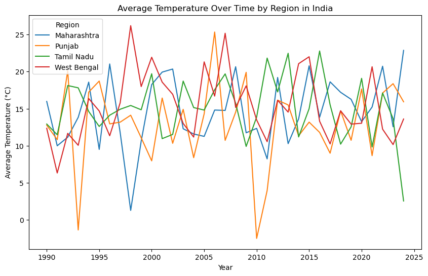

import pandas as pd
import numpy as np
import matplotlib.pyplot as pltDataset: climate_change_impact_on_agriculture_2024l.csv
Source: https://www.kaggle.com/datasets/waqi786/climate-change-impact-on-agriculture
The dataset provides agriculure and climite data for India, China, France, Canada, USA, Argentina, Australia, Nigeria, Russia, and Brazil during the time period 1990 to 2024. The data set is 15 columns and 10,000 rows. The data set essestially summarizizes the climate, agricultural practices, and economic impact of various regions within each country. The analysis of the data set would require full use of Pandas capabilities to group and pivit the data when completing analysis. The data set appears to be completed and would provide an opportunity to investigate the impact of climate change on algriculture within the countries studied.
url = "https://raw.githubusercontent.com/INFO-511-F24/final-project-ChilePeppers/main/data/climate_change_impact_on_agriculture_2024.csv"
data = pd.read_csv(url)data.head()| Year | Country | Region | Crop_Type | Average_Temperature_C | Total_Precipitation_mm | CO2_Emissions_MT | Crop_Yield_MT_per_HA | Extreme_Weather_Events | Irrigation_Access_% | Pesticide_Use_KG_per_HA | Fertilizer_Use_KG_per_HA | Soil_Health_Index | Adaptation_Strategies | Economic_Impact_Million_USD | |
|---|---|---|---|---|---|---|---|---|---|---|---|---|---|---|---|
| 0 | 2001 | India | West Bengal | Corn | 1.55 | 447.06 | 15.22 | 1.737 | 8 | 14.54 | 10.08 | 14.78 | 83.25 | Water Management | 808.13 |
| 1 | 2024 | China | North | Corn | 3.23 | 2913.57 | 29.82 | 1.737 | 8 | 11.05 | 33.06 | 23.25 | 54.02 | Crop Rotation | 616.22 |
| 2 | 2001 | France | Ile-de-France | Wheat | 21.11 | 1301.74 | 25.75 | 1.719 | 5 | 84.42 | 27.41 | 65.53 | 67.78 | Water Management | 796.96 |
| 3 | 2001 | Canada | Prairies | Coffee | 27.85 | 1154.36 | 13.91 | 3.890 | 5 | 94.06 | 14.38 | 87.58 | 91.39 | No Adaptation | 790.32 |
| 4 | 1998 | India | Tamil Nadu | Sugarcane | 2.19 | 1627.48 | 11.81 | 1.080 | 9 | 95.75 | 44.35 | 88.08 | 49.61 | Crop Rotation | 401.72 |
data.shape(10000, 15)data.info()
Countries = data['Country'].unique()
print(f'\n\n\nCountries: {Countries}')
data_year = data['Year'].unique()
data_year.sort()
print(f'\n\n\nYear period studied:{data_year}')<class 'pandas.core.frame.DataFrame'>
RangeIndex: 10000 entries, 0 to 9999
Data columns (total 15 columns):
# Column Non-Null Count Dtype
--- ------ -------------- -----
0 Year 10000 non-null int64
1 Country 10000 non-null object
2 Region 10000 non-null object
3 Crop_Type 10000 non-null object
4 Average_Temperature_C 10000 non-null float64
5 Total_Precipitation_mm 10000 non-null float64
6 CO2_Emissions_MT 10000 non-null float64
7 Crop_Yield_MT_per_HA 10000 non-null float64
8 Extreme_Weather_Events 10000 non-null int64
9 Irrigation_Access_% 10000 non-null float64
10 Pesticide_Use_KG_per_HA 10000 non-null float64
11 Fertilizer_Use_KG_per_HA 10000 non-null float64
12 Soil_Health_Index 10000 non-null float64
13 Adaptation_Strategies 10000 non-null object
14 Economic_Impact_Million_USD 10000 non-null float64
dtypes: float64(9), int64(2), object(4)
memory usage: 1.1+ MB
Countries: ['India' 'China' 'France' 'Canada' 'USA' 'Argentina' 'Australia' 'Nigeria'
'Russia' 'Brazil']
Year period studied:[1990 1991 1992 1993 1994 1995 1996 1997 1998 1999 2000 2001 2002 2003
2004 2005 2006 2007 2008 2009 2010 2011 2012 2013 2014 2015 2016 2017
2018 2019 2020 2021 2022 2023 2024]
# Quick look at the data for various regions in India
# required using Pandas sort and groupby variables
# to use this dataset would require pivot wider and pivot longer Pandas capabilities
India_data = data[data['Country'] == 'India']
India_data = India_data.sort_values('Year')
India_data = India_data.groupby(['Year', 'Region'])['Average_Temperature_C'].mean().reset_index()
plt.figure(figsize=(10, 6))
for region in India_data['Region'].unique():
region_data = India_data[India_data['Region'] == region]
plt.plot(region_data['Year'], region_data['Average_Temperature_C'], label=region)
plt.legend(title='Region')
plt.xlabel('Year')
plt.ylabel('Average Temperature (°C)')
plt.title('Average Temperature Over Time by Region in India')
plt.show()